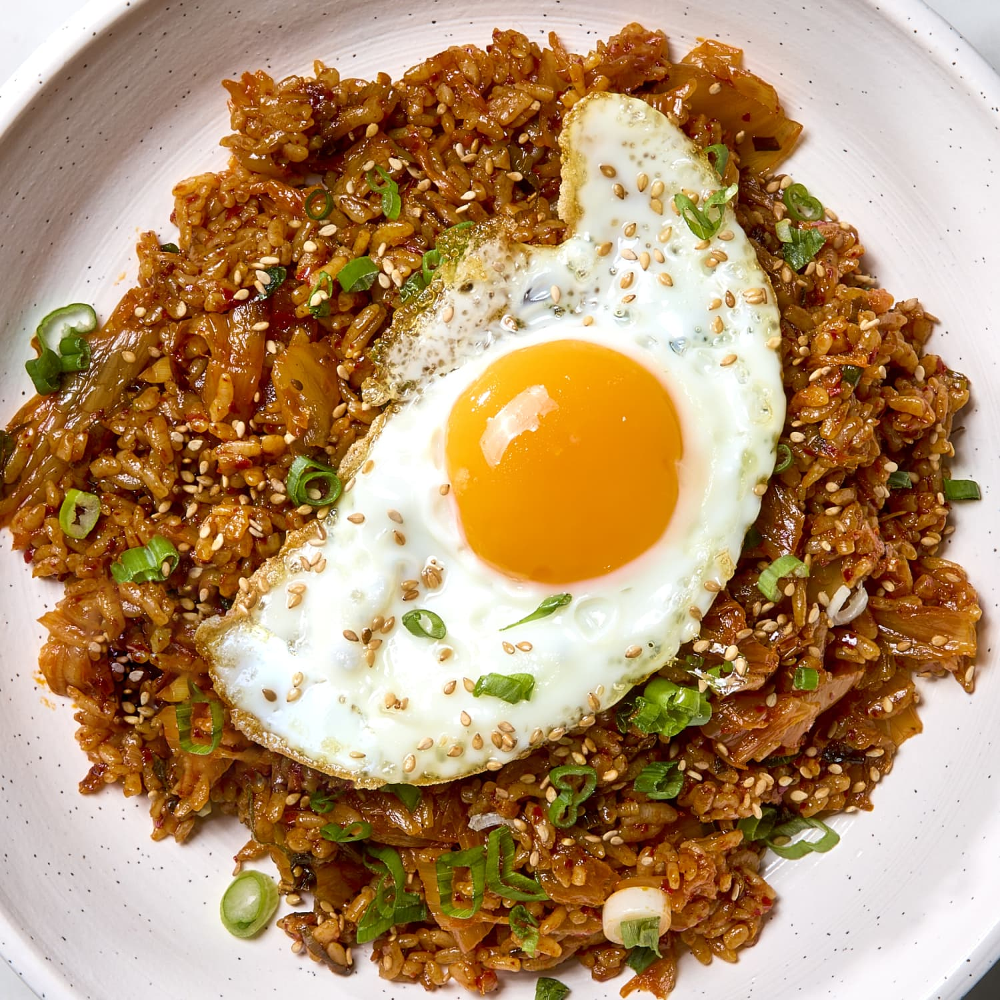

Kimchi fried rice (or kimchi-bokeumbab) is a delicious and versatile Korean fried rice dish that's sure to become a favorite. You can use ham, bacon, or spam instead of ground beef, add more veggies, or spice things up with Korean gochujang paste!